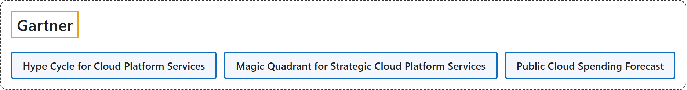

2. Gartner
Classification

Glossary
| Term | Definition | 中文翻译 | Source |
|---|---|---|---|
| Gartner 高德纳 |
"We deliver actionable, objective business and technology insights." | 我们提供可付诸行动、客观的商业与技术洞察。 | Gartner, n.d., opening heading |
| Hype Cycle for Cloud Platform Services 云平台服务技术成熟度曲线 |
"This Hype Cycle helps application and software engineering leaders understand the pace and viability of maturing and emerging cloud platform technologies, services and trends." | 这条技术成熟度曲线帮助应用和软件工程负责人了解正在成熟和新兴的云平台技术、服务与趋势的发展速度和可行性。 | Gartner, 2024a, "Summary" section |
| Magic Quadrant for Strategic Cloud Platform Services 战略云平台服务魔力象限 |
"Use this Magic Quadrant to choose the best long-term strategic hyperscaler to scale and innovate your business." | 用这个魔力象限选择最适合长期战略的超大规模云服务商，以扩展和创新业务。 | Gartner, 2026b, "Summary" section |
| Public Cloud Spending Forecast 公有云支出预测 |
"Worldwide end-user spending on public cloud services is forecast to total $723.4 billion in 2025" | 全球公有云服务终端用户支出预计 2025 年达到 7,234 亿美元 | Gartner, 2024c, para. 1 |
Timeline
| Date | Report | Scope | Key figures | Source |
|---|---|---|---|---|
| 2026-09-01 | Magic Quadrant for Strategic Cloud Platform Services, 2026 | Hyperscale public cloud providers |
|
Gartner, 2026b, "Summary" section; Peterson, 2026, para. 1 |
| 2026-06-15 | Hype Cycle for AI and Cloud Platform Services, 2026 (renamed) | Cloud platform services for AI-native software engineering | "AI-native software engineering is driving demand for cloud platform services that reduce infrastructure complexity." | Gartner, 2026a, "Summary" section |
| 2025-08-04 | Magic Quadrant for Strategic Cloud Platform Services, 2025 | Hyperscale public cloud providers |
|
Gartner, 2025, "Summary" section; Yun, 2025, paras. 1 and 2; Calder & Vahdat, 2025, para. 1 |
| 2024-11-19 | Public Cloud Spending Forecast for 2025 | Worldwide end-user spending on public cloud services |
|
Gartner, 2024c, paras. 1 and 2, "IaaS and PaaS Spending Dynamics" section |
| 2024-10-21 | Magic Quadrant for Strategic Cloud Platform Services, 2024 | Hyperscale public cloud providers |
|
Gartner, 2024b, "Summary" section; Khan, 2024, para. 1; Calder & Vahdat, 2024, para. 1 |
| 2024-07-24 | Hype Cycle for Cloud Platform Services, 2024 | Cloud platform technologies, services and trends | "A new wave of cloud platform innovations in AI, security, privacy and analytics crowd the Peak of Inflated Expectations." | Gartner, 2024a, "Summary" section |
References
Calder, B., & Vahdat, A. (2024, October 23). Google is a Leader in Gartner Magic Quadrant for Strategic Cloud Platform Services. Google Cloud Blog. https://cloud.google.com/blog/products/infrastructure-modernization/google-is-a-leader-in-gartner-magic-quadrant-for-strategic-cloud-platform-services
Calder, B., & Vahdat, A. (2025, August 8). Google is a Leader in the Gartner Magic Quadrant for Strategic Cloud Platform Services. Google Cloud Blog. https://cloud.google.com/resources/content/gartner-strategic-cloud-platform-services
Gartner. (2024a, July 24). Hype Cycle for cloud platform services, 2024. https://www.gartner.com/en/documents/5614791
Gartner. (2024b, October 21). Magic Quadrant for strategic cloud platform services. https://www.gartner.com/en/documents/5851847
Gartner. (2024c, November 19). Gartner forecasts worldwide public cloud end-user spending to total $723 billion in 2025 [Press release]. https://www.gartner.com/en/newsroom/press-releases/2024-11-19-gartner-forecasts-worldwide-public-cloud-end-user-spending-to-total-723-billion-dollars-in-2025
Gartner. (2025, August 4). Magic Quadrant for strategic cloud platform services. https://www.gartner.com/en/documents/6808434
Gartner. (2026a, June 15). Hype Cycle for AI and cloud platform services, 2026. https://www.gartner.com/en/documents/7997669
Gartner. (2026b, September 1). Magic Quadrant for strategic cloud platform services. https://www.gartner.com/en/documents/8326417
Gartner. (n.d.). About Gartner: Company information & leadership. Retrieved November 3, 2026, from https://www.gartner.com/en/about
Khan, O. (2024, October 23). Microsoft named a Leader in 2024 Gartner Magic Quadrant for Strategic Cloud Platform Services. Microsoft Azure Blog. https://azure.microsoft.com/en-us/blog/microsoft-named-a-leader-in-2024-gartner-magic-quadrant-for-strategic-cloud-platform-services/
Peterson, R. (2026, September 4). AWS named a Leader in the 2026 Gartner Magic Quadrant for Strategic Cloud Platform Services, 16 years running. AWS Migration and Modernization Blog. https://aws.amazon.com/blogs/migration-and-modernization/aws-named-a-leader-in-gartners-2026-strategic-cloud-platform-services-magic-quadrant-16-years-running/
Yun, C. (2025, August 15). AWS named as a Leader in 2025 Gartner Magic Quadrant for Strategic Cloud Platform Services for 15 years in a row. AWS News Blog. https://aws.amazon.com/blogs/aws/aws-named-as-a-leader-in-2025-gartner-magic-quadrant-for-strategic-cloud-platform-services-for-15-years-in-a-row/